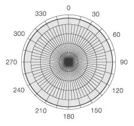

| ГЛАВНАЯ |
УСТРОЙСТВА
|
ОБ АВТОРЕ |
Основные критерии выбора микрофона
1. Принцип действия
Различные типы микрофонов имеют свои особенности и подходят для разных ситуаций.
| Динамический |
Конденсаторный |
Электретный |
- Работа: Динамические микрофоны используют электромагнитную индукцию для преобразования звука в электрический сигнал. Они обладают прочной конструкцией и могут выдерживать высокие уровни звукового давления, что делает их идеальными для усиления громких источников звука, таких как музыкальные инструменты или живые выступления.
- Преимущества: Высокая стойкость к повреждениям, низкий уровень шума, невысокая цена, не требует дополнительного питания.
- Ограничения: Ограниченный диапазон частот и детализации звука, требуется более близкое расположение к источнику звука.
|
- Работа: Конденсаторные микрофоны используют электростатический принцип для преобразования звука в электрический сигнал. Они имеют мембрану и заднюю пластину, создающие конденсатор. Требуется фантомное питание или встроенный аккумулятор.
- Преимущества: Отличное качество звука, широкий диапазон частот и высокая детализация, подходит для профессиональной аудиозаписи, студийного использования или подкастинга.
- Ограничения: Более высокая цена, более чувствительны к обработке и требуют более аккуратного обращения.
|
- Работа: Электретные микрофоны используют специальный материал, называемый электретом, для создания заряда в мембране. Они работают как гибрид между конденсаторными и динамическими микрофонами и могут использоваться в различных сферах.
- Преимущества: Хорошее качество звука, более доступная цена, широкий выбор моделей для разных задач.
- Ограничения: Могут быть менее точными и детализированными по сравнению с конденсаторными микрофонами, но в целом обладают достаточно хорошим качеством для многих приложений.
|
 |
 |
 |
2. Качество звука
При выборе микрофона для компьютера по качеству звука рекомендуется обратить внимание на следующие аспекты:
Диапазон частот: Хороший микрофон должен иметь широкий диапазон частот, чтобы передавать
как низкие, так и высокие частоты. Это позволяет записывать звуки с большей детализацией и естественностью.
Чувствительность: Чувствительность микрофона указывает на его способность реагировать на слабые звуковые сигналы.
Высокочувствительные микрофоны лучше подходят для записи тихих звуков или использования в тихих окружающих условиях.
Соотношение сигнал/шум: Хороший микрофон должен иметь высокое соотношение сигнал/шум, что означает, что он эффективно
улавливает и передает сигнал звука, минимизируя одновременно уровень фонового шума.
Искажения: Микрофон должен иметь низкий уровень искажений, чтобы предотвращать искажение звука при записи. Искажения
могут включать искажения гармоник, искажения от усиления и другие артефакты.
3. Направленность
Кардиоидные микрофоны - направлены вперед и частично в боковые
направления, а задняя часть микрофона блокирует звук сзади.
Этот тип микрофона идеально подходит для записи звука в условиях
шумной среды, так как он фокусируется на звуке, идущим от лица
пользователя, а не на окружающем шуме. Кардиоидные микрофоны часто
используются для записи вокала, подкастов, стриминга и видеоконференций.
Гиперкардиоидные микрофоны - имеют более узкую направленность,
чем кардиоидные микрофоны, и блокируют звук еще больше сзади.
Этот тип микрофона хорошо подходит для записи звука в условиях
сильного шума за кадром и обеспечения более точной и чистой
записи звука. Они часто используются для записи диалогов
в кино- и видеопроизводстве.

Омнидирекционные микрофоны - записывают звук со всех направлений,
что делает их идеальным выбором для записи звука в групповых видеоконференциях
или речевых мероприятиях. Однако они могут быть менее эффективными в условиях
шума, где необходимо фокусироваться на голосе пользователя.
Бидирекционные микрофоны - записывают звук с двух сторон,
что делает их идеальным выбором для записи дуэтов или интервью
между двумя людьми, сидящими напротив друг друга.